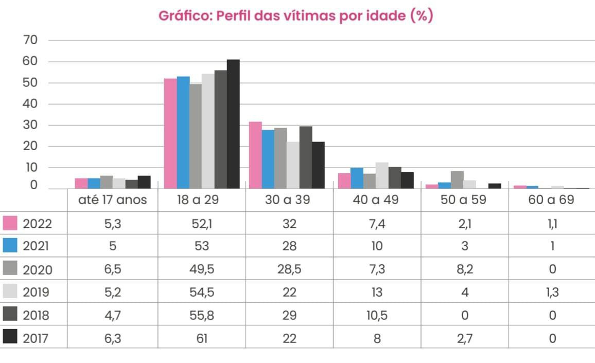

No ano de 2019, o Supremo Tribunal Federal decidiu criminalizar o ato de transfobia, que passou a ser enquadrado pela Lei de Racismo, entretanto, a criminalização não foi o suficiente, visto que muitos agressores ficam impunes.
Em relatório divulgado pela Associação Nacional de Travestis e Transexuais, o Brasil, pela décima quarta vez seguida, é o país que mais mata pessoas trans, tendo 131 casos de assassinatos só em 2022, fora os inúmeros casos de violação dos direitos humanos.
Segundo dados divulgados pelo ANTRA (Associação Nacional de Travestis e Transexuais), entre os anos de 2017 e 2022 ocorreram 912 assassinatos de pessoas trans, revelando uma sociedade extremamente preconceituosa e violenta.
Quando fazemos uma análise dos assassinatos por estado, percebemos que São Paulo, Ceará e Bahia lideram o ranking, sendo assim, a região Nordeste (com 40% de assassinatos em 2022) e a região Sudeste (27% de assassinatos em 2022) são as que mais matam pessoas trans. É importante ressaltar que no Distrito Federal nunca houve mais de 2 assassinatos por ano, mas sabemos que nem todos os casos são notificados.

Além disso, foram feitas análises do perfil das vítimas o que revelou algo ainda mais preocupante, visto que as vítimas, em sua maioria, são jovens entre 18 a 29 anos. Também há uma porcentagem significativa de vítimas menores de idade, tendo a mais jovem apenas 13 anos. Tais dados revelam a falta de proteção e políticas públicas voltadas para menores de 18 anos, que não se identificam com o gênero que lhe é designado. Infelizmente a violência contra adolescentes trans abrange o ambiente familiar e escolar, tendo em vista que a maioria das escolas não garantem o direito ao uso de nome social e não dão o devido apoio ao aluno.
Ao analisar questões raciais observamos novamente uma dupla vulnerabilidade envolvendo dois preconceitos que estão enraizados na sociedade brasileira: o racismo e a transfobia. Tal fato está explícito nos dados divulgados, já que a média de pessoas trans negras assassinadas é de 79,8%.

Ademais, temos a questão de gênero, visto que mulheres trans têm até 38 vezes mais chances de serem assassinadas do que homens trans, pessoas trans masculinas e pessoas não binárias. Segundo os dados divulgados, das 131 vítimas de violência em 2022, 130 eram mulheres trans, mostrando assim a grande influência da identidade de gênero e dos estigmas presentes na sociedade.
Outro fator preocupante são as tentativas de homicídio, só em 2022 foram registradas 84 tentativas, sendo a maioria das vítimas travestis e mulheres trans que são profissionais do sexo, estando essas últimas em grande vulnerabilidade. Entretanto, a hipocrisia desta sociedade é enorme, pois o país que mais mata pessoas trans é o que mais consome pornografia trans, revelando uma hipersexualização e objetificação em relação aos seus corpos, servindo apenas para prazeres sexuais. Vale salientar que muitos agressores são clientes dessas mulheres ou homens trans e a agressão ou assassinato é precedido por algum envolvimento sexual, reforçando a sexualização dessas pessoas, ou seja, os mesmos indivíduos que consomem pornografia e procuram pelas profissionais do sexo são os que perpetuam ódio e preconceito.
Além de assassinatos e tentativas de homicídio temos diversas violações de direitos humanos contra a comunidade trans, só em 2022 foram registradas pelo menos 142 violações, dentre elas a transfobia no atendimento de saúde, ameaças, violência psicológica, negativa de uso do nome social, assédio sexual online, retirada do banheiro feminino e várias outras violações que toda a comunidade trans sofre em seu dia a dia.
Tais fatores contribuem fortemente para o aumento de suicídio da população trans, já que a grande maioria sofre diversos tipos de violência na rua e não tem o devido apoio nem dos órgãos públicos nem da família.
É lamentável que um país tão diverso seja cenário de tanta violência e preconceitos que são perpetuados de geração em geração, fazendo cada vez mais vítimas. Além disso, o descaso do governo durante décadas e a falta de políticas públicas voltadas para a comunidade trans ficam evidentes, fazendo com que essas pessoas não se sintam acolhidas e nem amparadas pela lei.